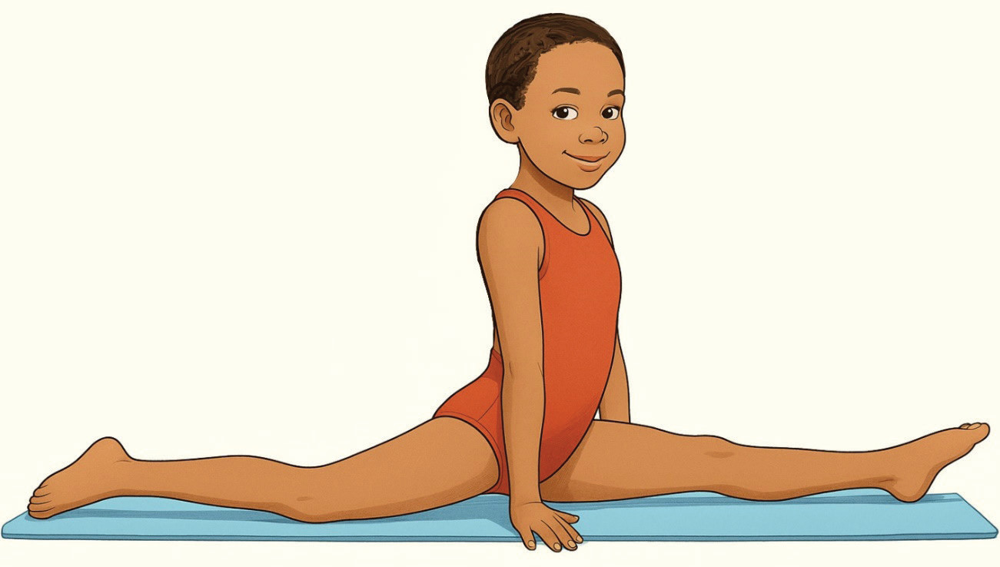

(iv)
Sit with your legs straight in front and reach for your toes keeping your back flat and hold for a while;
(v)
From a lunge position, slowly extend your front leg straight while keeping your back knee on the ground, and hold it for 20 – 30 seconds before switching legs, Figure 4.5;
(vi)
Start with a deep lunge and slowly slide your front foot forward while your hands are anchored on the ground for 20 – 30 seconds; and
(vii)
Repeat the practice regularly to improve the basic cast skill.
Figure 4.5: Front splits

Split leap
A split leap is a gymnastics skill where a gymnast jumps into the air and extends both legs into a split position while maintaining height, flexibility, and control. The following steps will help you practice split leap:
(i)
Start in a lunge position with one foot forward, arms lifted and chest tall;
(ii)
Push off the back leg explosively while swing the front leg upward to initiate the split;
(iii)
Extend both legs into a full split, keeping toes pointed and back upright, Figure 4.6; and